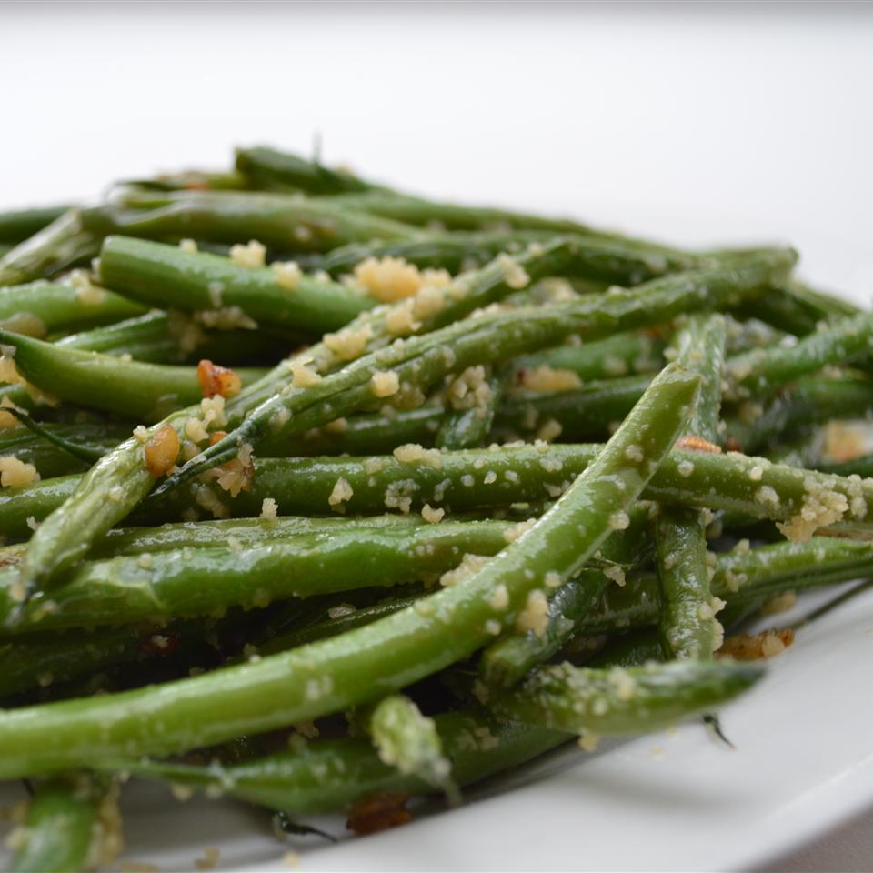

Description:
Caramelized shallots and garlic with cheese. Yummy!
- Prep: 10 mins
- Cook: 20 mins
- Total: 30 mins
- Servings: 5
- Yield: 5 servings
Ingredients:
- 1 tablespoon butter
- 3 tablespoons olive oil
- 1 large shallot, chopped
- 8 cloves garlic, sliced
- 15 ounces fresh green beans, trimmed
- salt and ground black pepper to taste
- ½ cup grated Parmesan cheese
Directions:
- Melt butter with olive oil in a large skillet over medium heat. Cook shallot and garlic in the hot butter mixture, stirring frequently, until soft and slightly browned, 5 to 10 minutes.
- Stir green beans with shallot mixture; season with salt and pepper. Cook and stir green beans until tender, about 12 minutes.
- Remove skillet from heat and sprinkle Parmesan cheese over the green beans.